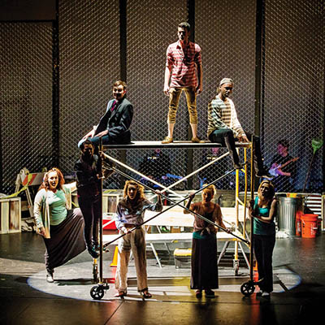
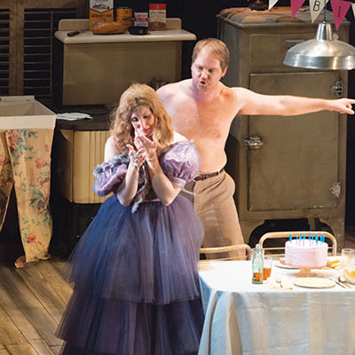
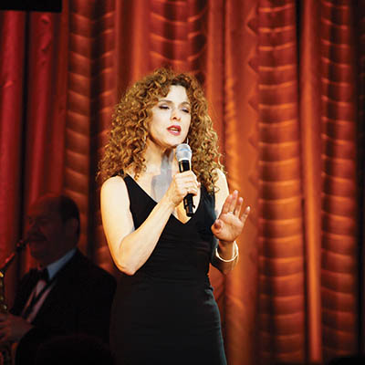

Curtain call
Winter & Spring Performing Arts Guide

Hubbard Street Dance Chicago
The first half of 2016 promises to be nothing if not entertaining. Music and theater-lovers alike will find performances to choose from nearly every week from now through June, ranging from opera to improv, jazz to ballet, and wind ensembles to Broadway musicals. For your theater-going convenience, we’ve listed the stage happenings of note in and around Tulsa and highlighted some of what we expect to be the most exciting shows of the year. Now, without further ado…
JANUARY
Every Saturday
The Drunkard and The Olio | Spotlight Theatre | Tulsa Spotlighters
21-24
Marvel Universe Live! | BOK Center | SMG
22
The Gospel According to Luke | Spotlight Theatre
22-23
OkMEA Music Festival | Chapman Music Hall, PAC | Oklahoma Music Educators Association
22-4/17
Oklahoma Dance Film Festival | Hardesty Arts Center | The Bell House
23
Signature Classics: Barber, Bernstein and Boyer – The Dream of America | Van Trease PACE | Signature Symphony
23-24
Children’s Oliovations | Spotlight Theatre | Tulsa Spotlighters
26
Marine Corps Jazz Quintet | Lorton Performance Center | University of Tulsa School of Music
28-31
I Hate Hamlet | Chapman Theatre, Kendall Hall | University of Tulsa Dept. of Theatre
29
Jazz on the River | Spotlight Theatre | Tulsa Spotlighters
30
Haydn Mass in Time of War, Beethoven’s Ninth Symphony | Cascia Hall Performing Arts Center | Tulsa Oratorio Chorus
31
Dance on the River | Spotlight Theatre | Tulsa Spotlighters
FEBRUARY
1
Ron Radford Flamenco Guitar Concert | Lorton Performance Center | University of Tulsa School of Music
2
Leona Mitchell | Lorton Performance Center | University of Tulsa School of Music
2-8
Kinky Boots | Chapman Music Hall, PAC | Celebrity Attractions
3
Tulsa Opera Big Sing | Kathleen Westby Pavilion, PAC | PAC Trust

The Show Must Go On!
Thurs., Feb. 4 | Tulsa Project Theatre fundraiser | The Campbell Hotel
Last November, a fire at the Tulsa Project Theatre storage unit destroyed most of TPT's costumes and props (est. value $60,000). This was donated space, insurance will only cover a fraction of what was lost, and the fire has left the company with unbudgeted additional costs this season. They will need to rent and/or purchase replacement costumes and props to successfully mount these productions in the professional manner audiences have come to expect from them.
This fundraiser is the brainchild of actors Seth Paden and Cristen Burdell (who recently played Brad and Janet in “Rocky Horror”). Equity Actors and cast members from this season’s shows will perform songs from past, current and future productions. Tickets are $20 per person or $30 a couple, and the cost includes food and wine in addition to the performance. There will also be a cash bar, along with silent and live auctions. Auction items include Seinfeld DVDs signed by Jason Alexander and an exclusive dinner for four at the dress rehearsal for “Billy Elliot.” Tickets can be purchased online at tulsaprojecttheatre.com or by calling 918.770.6679
4
Gabriel Iglesias | The Joint | Fuse
5
Million Dollar Quartet | Broken Arrow Performing Arts Center
5-6
Signature Pops: Chris Mann | Van Trease PACE | Signature Symphony
6-7
48 Hour Play Festival | Spotlight Theatre | Spotlight Children’s Theater
6-13
Woman from the Town | Liddy Doenges Theatre, PAC | Theatre North
7
Fauré Piano Quartet | John H. Williams Theatre, PAC | Chamber Music Tulsa
8
TU Symphony Orchestra | Lorton Performance Center | University of Tulsa School of Music
11
Concerts with Commentary: The Sacred Harp | Lorton Performance Center | University of Tulsa School of Music
11-14
Lady Day at Emerson's Bar and Grill | IDL Ballroom | Theatre Pops

Romeo and Juliet
Fri., Feb. 12 through Sun., Feb. 14 | Tulsa PAC | Tulsa Ballet
It’s not every day a local arts organization commissions a huge new work from an emerging international star. But Tulsa Ballet did just that when it asked Edwaard Liang, former principal dancer with New York City Ballet, to create a new “Romeo and Juliet” in 2012. The production was a rousing success, praised by the editor of Dance Magazine as “a ‘Romeo and Juliet’ to last.”
“It’s one of those stories that every person in the audience can identify with,” Tulsa Ballet artistic director Marcello Angelini said. “The two protagonists are not fairies or sorcerers, evil magicians or beautiful princesses. And they certainly don’t wake up after 100 years without a single wrinkle or bag under their eyes! Romeo and Juliet are as human as humanly possible, with all the virtues and vices inherent to human beings. They are pure and kind, able to love each other without any reservations, and yet they disrespect their parents, they rage, they kill. There is some Romeo and Juliet in each of us, and as such we are able to emotionally ‘live’ this story when watching the ballet.”
12
Mission IMPROVible | Tulsa Little Theatre | Encore!
12-21
Pride and Prejudice | Broken Arrow Community Playhouse

To Kill a Mockingbird
Fri., Feb. 12 through Sun., Feb. 21 | John H. Williams Theatre | The Playhouse Tulsa
The Playhouse is a relative newcomer to Tulsa’s theater scene, but in its five short seasons it has brought impressive depth to the field, with productions ranging from “Charlotte’s Web” to “Othello,” and rich original work by playwright-in-residence Cody Daigle.
The company’s commitment to contemporary relevance led Playhouse founder and director Courtneay Sanders to approach a stage production of Harper Lee’s classic novel “To Kill a Mockingbird” not as a period play, but as an urgently topical story for our post-Tamir Rice, post-Ferguson reality.
“The scenic design represents Maycomb, Alabama, in the play,” Sanders explained. “But is nondescript enough that it could easily be any town. We have infused the piece with music, some of which is sung a cappella by a black female chorus, allowing the audience to observe the juxtaposition of cultures within this small community. The ensemble actors remain on stage throughout the play, and several actors play multiple roles, which they change before the audience’s eyes. The actors, like the audience, are constant witnesses to every event taking place within their community — events that will dictate their future. It is left to them to either take action against injustice, or accept the consequences. Our goal is to further reveal the emotional depth and genuine heart of this poignant story.”
16
Bela Rozsa Composition Competition | Lorton Performance Center | University of Tulsa School of Music
16
Magic Men Live | Cox Business Center | SMG
19-28
Don’t Dress for Dinner | Liddy Doenges Theatre, PAC | Theatre Tulsa
20
TSO Classics: Spirit and Awakenings | Chapman Music Hall, PAC | Tulsa Symphony
25
Bela Rozsa Memorial Concert | Lorton Performance Center | University of Tulsa School of Music
26-3/6
The Lion in Winter | Van Trease PACE | TCC Theatre Dept.
27
Signature Classics: Victoria Luperi – A Red Rose for Music | Van Trease PACE | Signature Symphony
28
OK Mozart Launch Party | Bartlesville Community Center
29
TU Wind Ensemble and Symphonic Winds | Lorton Performance Center | University of Tulsa School of Music
29
ORU Wind Ensemble | Timko Barton Lobby | ORU School of Music
MARCH
1
TCC Concert Choir, Orchestra, Concert Band | Van Trease PACE | TCC Music Dept.
1-2
Chang Mu Dance | John H. Williams Theatre, PAC | Choregus Productions
2
Tulsa Camerata | Kathleen Westby Pavilion, PAC | PAC Trust
3
TCC Show Choir and Jazz Concert | Van Trease PACE | TCC Music Dept.
3-6
Godspell | Howard Auditorium | ORU Theatre

A Streetcar Named Desire
Fri. and Sun., March 4 and 6 | Chapman Music Hall, Tulsa PAC | Tulsa Opera
André Previn is a musical giant who got his start as a jazz pianist, wrote the Academy Award-winning scores for the movie musicals “Gigi” and “Porgy and Bess,” conducted the London Symphony Orchestra for 11 years, and composed dozens of pieces of classical music. One of those is “A Streetcar Named Desire,” an opera based on Tennessee Williams’ Pulitzer Prize-winning 1947 play, the film version of which made Marlon Brando a household name. Jazzy and vernacular, “Streetcar” is bursting with the smoldering intensity that marks both play and film. Previn’s opera comes to Tulsa complete with up-and-coming soprano Caroline Worra in her Tulsa Opera debut as Blanche DuBois, along with acclaimed director David Schweizer as stage director. The always-innovating Kostis Protopapas will conduct the orchestra.
4-6
Charlie and the Chocolate Factory | Tulsa Little Theatre | Encore!
4-13
Rent | Charles E. Norman Theatre, PAC | Tulsa Project Theatre

Bernadette Peters
Sat., March 5 | Broken Arrow Performing Arts Center
I was smitten with Bernadette Peters from the first time I saw her on TV back in the ‘90s, performing with Mandy Patinkin in Stephen Sondheim’s musical “Sunday in the Park with George.” Her face impossibly girlish with its halo of red curls, her voice a torrent of husky longing and sweet desire, Peters simply has no peer in musical theater in range or in skill. Over the course of five decades on stage and screen, she’s brought exquisite clarity and depth to the toughest and most diverse roles, including “Into the Woods,” “Gypsy,” “Annie,” “Pennies from Heaven” and “The Jerk” (where she played a role her co-star Steve Martin wrote for her). For us, far as we are from the Great White Way, this solo concert is a rare chance to see a legend in real life.
7
ORU Orchestra | Timko Barton Performance Hall | ORU School of Music
8
Bullets Over Broadway: The Musical | Chapman Music Hall | Celebrity Attractions
10
Concerts with Commentary: A Winter’s Journey | Lorton Performance Center | University of Tulsa School of Music
11
Benjamin Zander: Experiencing The Art of Possibility | Chapman Music Hall, PAC | Tulsa Town Hall
11
Rodney Carrington | BOK Center | SMG
11
Tyler Perry’s Madea on the Run | Brady Theater | AEG Live
11-12
Signature Pops: Blockbuster Broadway | Van Trease PACE | Signature Symphony
11-19
Buddy: The Buddy Holly Story | John H. Williams Theatre, PAC | American Theatre Company
11-20
The Flick | Liddy Doenges Theatre, PAC | Theatre Tulsa
12
TSO Classics: Beneath the Score - Mahler’s Resurrection Symphony | Chapman Music Hall, PAC | Tulsa Symphony
12
Peppa Pig’s Big Splash | Brady Theater
18-20
Masters of Dance | Chapman Music Hall, PAC | Tulsa Ballet
22
Duo Amal | Chapman Music Hall, PAC | Choregus Productions
22
ORU Jazz Ensemble | Timko Barton Lobby | ORU School of Music
22
TCC Community Band & Orchestra | Van Trease PACE | TCC Music Dept.
24-27
Cirque du Soleil: Toruk – The First Flight | BOK Center | SMG
29
Dual Pianos Ragtime: Ezequiel Palleja and Bryan Wright | John H. Williams Theatre, PAC | Ragtime for Tulsa
29
ORU Guitar Ensemble | Timko Barton Lobby | ORU School of Music
29-4/3
Rodgers and Hammerstein’s Cinderella | Chapman Music Hall, PAC | Celebrity Attractions
31-4/3
Sondheim on Sondheim | Lorton Performance Center | Univeristy of Tulsa Dept. of Theatre
APRIL
1
Sesame Street Live: Make a New Friend | BOK Center | SMG
1-10
Steel Magnolias | Liddy Doenges Theatre, PAC | The Playhouse Tulsa
2
Dreams World | John H. Williams Theatre, PAC | Oklahoma Performing Arts
3
Jerusalem Quartet | John H. Williams Theatre, PAC | Chamber Music Tulsa
6
Barron Ryan | Kathleen Westby Pavilion, PAC | PAC Trust
6
Gen. Keith Alexander | Chapman Music Hall, PAC | OSU Tulsa Business Forum
7-10
The Princess & the Pea | Howard Auditorium | ORU Theatre and The Playhouse Tulsa
8
TU Opera: Highlights from Mozart’s The Magic Flute | Lorton Performance Center | University of Tulsa Opera Theatre
8
Peter Rabbit Tales | John H. Williams Theatre, PAC | PAC Trust
8
ORU Chamber Singers & University Chorale | Timko Barton Lobby | ORU School of Music
8-17
The Beauty Queen of Leenane | Broken Arrow Community Playhouse
8-17
Rumplestiltksin | Spotlight Theatre | Spotlight Children’s Theater
9
TSO Pops: Rodgers and Hammerstein at the Movies | Chapman Music Hall, PAC | Tulsa Symphony
Hubbard Street Dance Chicago
Tues., April 4 | Chapman Music Hall, PAC | Choregus Productions
“Hubbard Street has been on the Choregus radar since we started,” said Ken Tracy, whose Choregus Productions has delivered some of the most mind-blowing national and international dance Tulsa has ever seen, including Complexions Contemporary Ballet, the Martha Graham Dance Company, Wendy Whelan’s “Restless Creature,” and Kidd Pivot’s “The Tempest Replica.”
“For almost 40 years,” he continued, “the company has commissioned new work and acquired repertoire hits by master and notable choreographers including Jirí Kylián, Nacho Duato, William Forsythe, Twyla Tharp, Ohad Naharin, Victor Quijada, Aszure Barton. The Hubbard Street dancers are each phenomenal artists in their [own] right, but when doing ensemble work the company is as good as it gets in the field of contemporary dance. They have appeared in 44 states and we think it is about time Hubbard Street comes to Oklahoma.”
This truly cutting-edge company’s appearance will include a one-night-only performance, a master class for advanced local dancers and, as usual with Choregus, a rousing educational performance for several hundred public school students.
12
ORU Jazz Combos | Timko Barton Performance Hall | ORU School of Music
14
TU Jazz Band | Lorton Performance Center | University of Tulsa School of Music
14
ORU Orchestra & Wind Ensemble | Timko Barton Lobby | ORU School of Music
15
Capella Chamber Singers | Lorton Performance Center | University of Tulsa School of Music
15-24
Aida | Van Trease PACE | TCC Theatre Dept.
15-30
Fiddler on the Roof | John H. Williams Theatre, PAC | Theatre Tulsa
16
Signature Classics: Gershwin’s “Porgy and Bess” | Van Trease PACE | Signature Symphony
17
TU Chamber Players | Lorton Performance Center | University of Tulsa School of Music
18
TU Wind Ensembles | Lorton Performance Center | University of Tulsa School of Music
19
TCC Woodwind, Guitar, Jazz, Cello, Choir & Brass | Van Trease PACE | TCC Music Dept.
21
Concerts with Commentary: American Originals | Lorton Performance Center | University of Tulsa School of Music
21
TCC Concert Band, Choir & Orchestra | Van Trease PACE | TCC Music Dept.
21-24
Why Torture is Wrong, and the People Who Love Them | Liddy Doenges Theatre, PAC | Theatre Pops
22
Lily Tomlin | Broken Arrow Performing Arts Center
22
Doris Kearns Goodwin: Leadership Lessons from the White House | Chapman Music Hall, PAC | Tulsa Town Hall
22
Tony Bennett in Concert | Chapman Music Hall, PAC | 35 Concerts
22-24
TBII Emerging Choreographers | Studio K | Tulsa Ballet
24
Judy Collins in Concert | Chapman Music Hall | Woody Guthrie Center
25
TU Symphony Orchestra President’s Concert | Lorton Performance Center | University of Tulsa School of Music
25
Die Laughing Improv Troupe | Van Trease PACE | TCC Theatre Dept.
29-5/7
Billy Elliot: The Musical | Liddy Doenges Theatre, PAC | Tulsa Project Theatre
MAY
1
Patti LuPone: Coulda, Woulda, Shoulda…played that part | Broken Arrow Performing Arts Center
1
Dalí Quartet with Ricardo Morales | John H. Williams Theatre, PAC | Chamber Music Tulsa
4
Susie Brown & Friends | Kathleen Westby Pavilion, PAC | PAC Trust
6
Jeff Dunham | BOK Center | SMG
6-8
Samson & Delilah | Chapman Music Hall, PAC | Tulsa Opera
6-15
Tulsa Ballet: Signature Series | Lorton Performance Center | Tulsa Ballet
10
Alton Brown: Eat Your Science | Chapman Music Hall, PAC | 35 Concerts
10
TCC Community Band & Orchestra | Van Trease PACE | TCC Music Dept.
13-21
Mothers and Sons | John H. Williams Theatre, PAC | American Theatre Company
13-21
Bye Bye Birdie | Liddy Doenges Theatre, PAC | Theatre Tulsa Family
13-22
Really Rosie | Spotlight Theater | Spotlight Children’s Theater
14
TSO Classics: American Fanfare | Chapman Music Hall, PAC | Tulsa Symphony
20
Kyle Abraham/Abraham in Motion | Chapman Music Hall, PAC | Choregus Productions
24-29
Jersey Boys | Chapman Music Hall, PAC | Celebrity Attractions
29
Dual Ragtime Concert | John H. Williams Theatre, PAC | Ragtime for Tulsa
JUNE
3-11
The Tempest | On the Lawn at Philbrook | American Theatre Company
3-12
Shrek: The Musical| John H. Williams Theatre, PAC | Tulsa Project Theatre
11-12
Mamma Mia! | Chapman Music Hall, PAC | Celebrity Attractions
17-26
Gypsy | Broken Arrow Community Playhouse
VENUE DIRECTORY
BOK Center
200 S Denver Ave | bokcenter.com
Brady Theater
105 W M.B. Brady St | bradytheater.com
Broken Arrow Community Playhouse
1800 S Main St, Broken Arrow | bacptheatre7471.wix.com/bacp
Broken Arrow Performing Arts Center
701 S Main St, Broken Arrow | brokenarrowpac.com
Cascia Hall Performing Arts Center
2520 S Yorktown Ave | casciahall.org
Cox Business Center
100 Civic Center | coxcentertulsa.com
Hardesty Arts Center
101 E Archer St | ahhatulsa.org
Howard Auditorium and Timko Barton Performance Hall
7777 S Lewis Ave | oru.edu
IDL Ballroom
230 E 1st St | idlballroom.com
The Joint
777 W Cherokee St, Catoosa | hardrockcasinotulsa.com
Kendall Hall
601 College Ave | utulsa.edu
Lorton Performance Center
550 S Gary Pl | utulsa.edu
Philbrook Museum of Art
2727 S Rockford Ave | philbrook.org
Spotlight Theatre
1381 Riverside Dr | spotlighttheatre.org
Studio K
1212 E 45th Pl | tulsaballet.org
Tulsa Little Theatre
1511 S Delaware Ave | tulsalittletheatre.com
Tulsa Performing Arts Center
110 E 2nd St | tulsapac.com
Van Trease PACE
10300 E 81st St | tulsacc.edu
For more from Alicia, read her performing arts highlights of 2015.
.jpg)
.jpg)